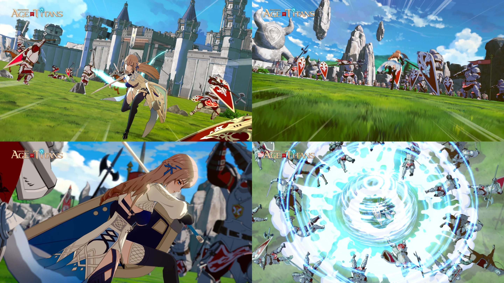
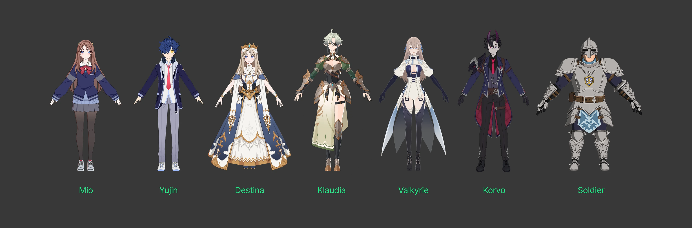
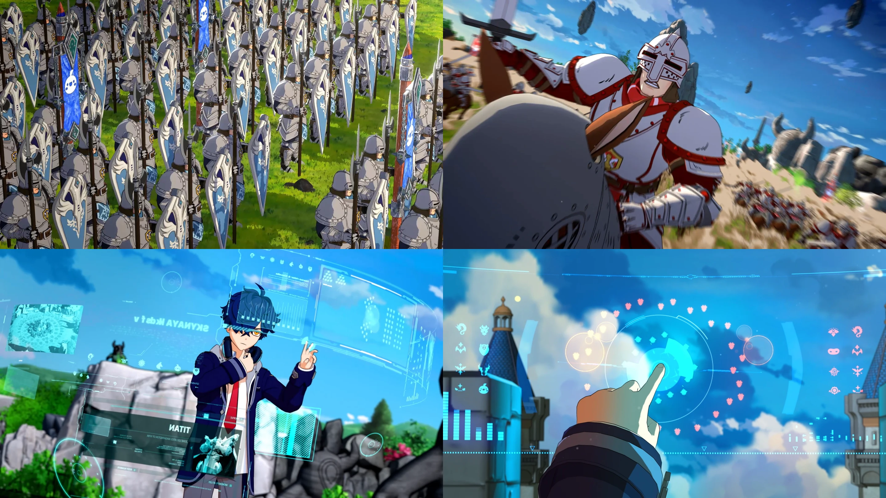

Arclight Keep
A fortress kingdom built around the last stable Aether Core. Its walls shine above the clouds, but its foundations hide an older war.
A SKY-FANTASY ACTION STRATEGY RPG
Beyond the clouds, ancient powers wait to be awakened.
Set sail across floating kingdoms, gather a crew of commanders, and challenge the forgotten Titans that shaped the age of sky and ruin.

STORY
There exists a world where kingdoms drift across a sea of clouds, their cities anchored to fragments of an ancient continent. For centuries, the people of the sky lived beneath the protection of colossal relics known as Titans.
But the Titans have begun to stir. As islands fall into the storm below and old alliances fracture, a young commander is entrusted with a skyship, a royal charge, and a forbidden relic capable of waking the machines that once ended an empire.
The journey begins at the edge of a collapsing kingdom - and ends where the first Titan opened its eyes.
WORLD
The Skyreach is a chain of floating territories connected by trade winds, sky routes, and ancient Aether currents. Every island carries a different history: royal fortresses, green frontier villages, abandoned workshops, and ruins where the Titans still dream beneath layers of stone.
A fortress kingdom built around the last stable Aether Core. Its walls shine above the clouds, but its foundations hide an older war.
A green island region where ancient engines sleep under open fields and rebel scouts protect villages beyond royal command.
A ruined mechanical sanctuary suspended between storm layers. No map marks its path, yet every faction seeks the weapons sealed within.
CHARACTERS
Each commander brings a distinct weapon, battlefield role, and personal vow. Build your party around their strengths, then uncover the choices that bind them to the Titans.

Royal Shieldbearer
Aegis Blade & Crest Shield
If the sky must fall, then I will hold it a little longer.
Aether Duelist
Resonance Lightblade
Orders are easy. Conviction is harder.
Skyship Tactician
Command Codex & Signal Pistol
A good captain reads the wind before the battlefield.
Relic Engineer
Remote Artillery Array
Machines do not betray us. People do.
GAMEPLAY
Lead a party of commanders in real-time encounters where positioning, timing, and companion synergy decide each battle. Switch between tactical orders and cinematic special attacks as the enemy line closes in.

Build a crew of commanders with different roles: shieldbearers, duelists, artillery callers, and Aether casters.
Chain companion abilities to stagger elite foes, protect allies, and trigger powerful team attacks at critical moments.
Defend citadels, break siege lines, escort skyships, and hunt ancient beasts across layered battlefield objectives.
Charge resonance through combat and call upon Titan relics to unleash battlefield-changing powers.
RELIC TITANS
Titans are living relics born from Aether and ancient craft. Some were once worshiped as protectors, while others were sealed away as weapons too dangerous for any kingdom to command.
A golden guardian Titan said to have shielded the upper citadels during the first skyfall. Aurion gathers lightning around its armor and creates radiant barriers that protect allied forces from annihilation.
TRAILER
A cinematic preview of floating kingdoms, awakened relics, and the companions who rise when the clouds begin to fall.
MEDIA
AETHER TITANS
Begin a heroic anime adventure across floating kingdoms, ancient ruins, and battles where every companion carries a reason to fight.